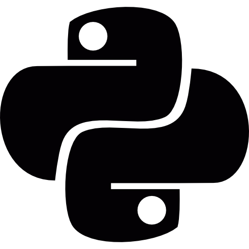
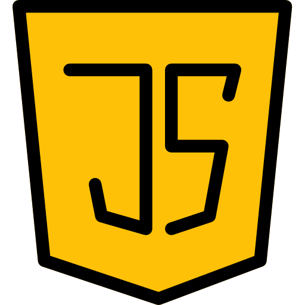

Conhecimento nas principais tecnologias do mercado
-

- 
-

- 
Sou Weslley Batista de Queiroz, nascido em SP capital. Gosto muito de jogar bola e jogos eletrônicos, atualmente estudo análise e desenvolvimento de sistemas na FECAF.
Digital Innovation One - Fev - 2024
O que é versionamento de código, Git e GitHub. Como instalar e configurar o Git em diferentes sistemas operacionais e como autenticar via Token e SSH. Como manusear repositórios, indo desde a criação e clonagem até o gerenciamento de branches, passando por todas as etapas de salvar, desfazer e sincronizar alterações com o repositório remoto.
Digital Innovation One - Fev - 2024
Bootcamp onde foi ensiando sobre a linguagem de programação java e seus conceitos básicos.
Agile Methodology Nível 1 - Univ. Fecaf (2024);
Otimização dos resultados em grupos de trabalho
Estou disponível para serviços e novas conexões. Contate-me via e-mail e conecte-se comigo através das minhas redes sociais.